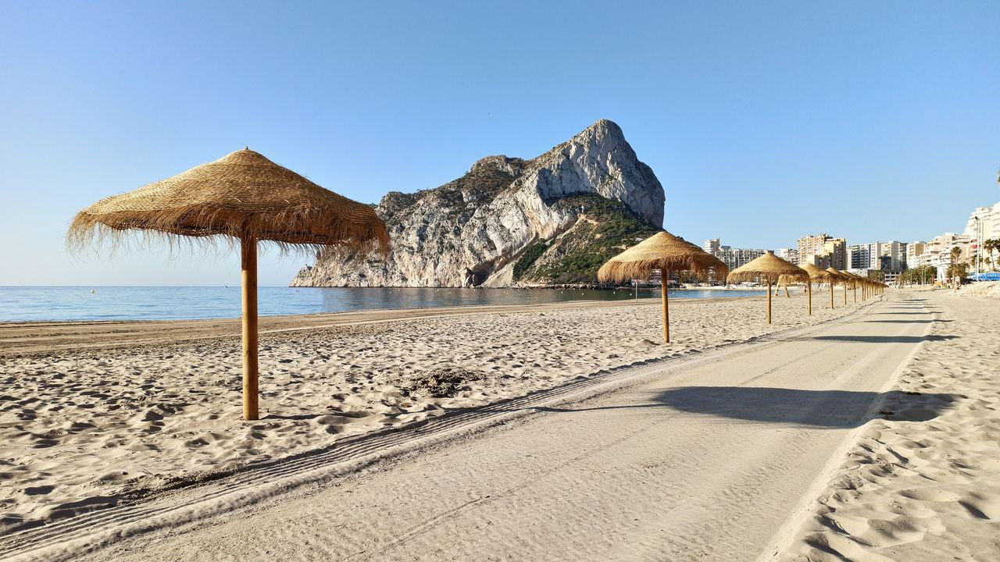
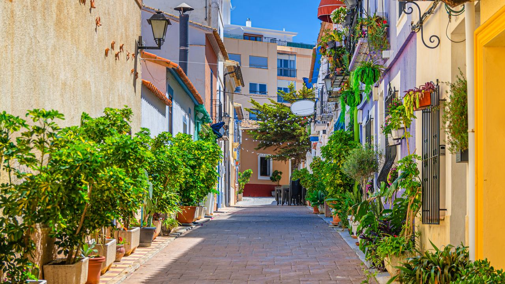

Living in Spain · Everyday life
Life in Spain in the Off-Season
 By Lucyna Gacek · · updated · 3 min read
By Lucyna Gacek · · updated · 3 min read

In short: From about November to March the Spanish coast is calm, sunny and mild, with days of 16–20 °C. Supermarkets, markets, health centres, gyms and most restaurants stay open, but some beach bars, seasonal shops and holiday complexes close. Winter rentals are cheaper and appointments are quicker. The off-season is the best time to test whether you would enjoy living here all year.
Many people only know the Spanish coast in July and August: full beaches, busy promenades and restaurants with queues. Real life starts when the season ends. From autumn to spring, towns slow down and belong again to the people who live there. If you are thinking of moving or buying, this is the side of Spain you most need to see.
When is the off-season?
On the Costa Blanca and Costa del Sol, the busy season runs roughly from Easter to the end of September, with the peak in July and August. October is a shoulder month. The real off-season is from November to March, apart from short peaks at Christmas, New Year and on local fiesta days.
It is not empty, though. Many northern Europeans spend the winter on the coast, so Benidorm, Torrevieja, Fuengirola and other towns stay lively all year.
What everyday life is like

Daily life simply carries on. Supermarkets, weekly street markets, bakeries, pharmacies, banks, health centres, gyms and sports clubs keep normal hours. Cafés fill with neighbours instead of visitors, and you start to recognise faces. Parking is easier, the town hall is less busy and many people say they feel part of the place for the first time.
The weather helps. Winter days are usually sunny and 16–20 °C, so walking, cycling, golf and lunch outdoors are part of normal life, even in January.
The advantages
- Peace and space: quiet beaches, free tables on terraces, no traffic jams on the coast road.
- Lower costs: winter lets (usually October to May) are much cheaper than summer rents, and flights are cheaper too.
- Faster services: shorter waits at the doctor, the bank and the town hall.
- A real community: clubs, language exchanges, walking groups and volunteer groups are most active in winter.
The downsides
- Some places close: beach bars (chiringuitos), some restaurants, ice-cream shops and holiday complexes may close or open only at weekends, especially in small resorts.
- Fewer events: concerts and open-air festivals are mostly a summer thing, though cities such as Alicante and Málaga have a full year-round programme.
- Cool homes: houses are built for heat. Tiled floors and thin walls feel cold on winter evenings, so a heat pump and good windows matter.
- Quiet holiday areas: in some urbanisations most homes are holiday homes, and in winter you may have few neighbours.
Which places stay lively all year?
Larger towns with a mix of Spanish and international residents feel most alive in winter. On the Costa Blanca these include Alicante, Benidorm, Torrevieja, Jávea and Dénia. On the Costa del Sol, Marbella, Fuengirola and Estepona stay busy all year. Small resorts and golf urbanisations are quieter, which some people love and others find too calm.
The best test before you move or buy
If you are thinking of living in Spain, spend at least a few weeks here between November and February before you decide. Rent in the area you like, shop where locals shop, and see how the home feels on a cool, rainy day. Visit the property you are interested in during the week, not only on a sunny weekend, and look at how many neighbours are around. For costs, see our guide to the cost of living in Spain.
Frequently asked questions
What is the off-season on the Spanish coast?
Roughly November to March, apart from Christmas, New Year and local fiestas. October and April to May are shoulder months.
Do restaurants close in winter in Spain?
Most stay open, especially in larger towns. Some beach bars and seasonal restaurants close or open only at weekends.
Is it cheaper to rent in Spain in winter?
Yes. Winter lets, usually from October to May, are much cheaper than summer holiday rents.
Is the Costa Blanca or Costa del Sol warm in winter?
Mild and sunny. Days are usually 16–20 °C, nights 6–10 °C. You can often eat outside at lunchtime.
See the real Spain
The off-season shows you the real costs, the real pace and the real neighbours. If you still love it in January, you will love it all year. When you are ready to look at homes, tell us what you need and we will show you places that are lively in every season.